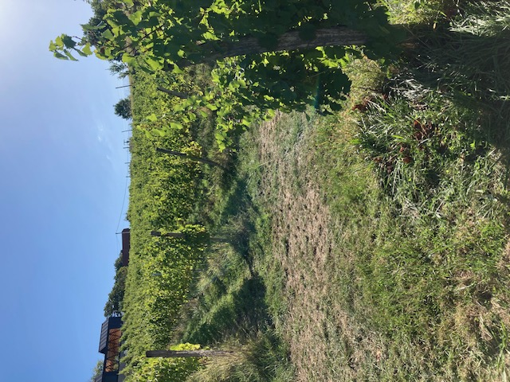
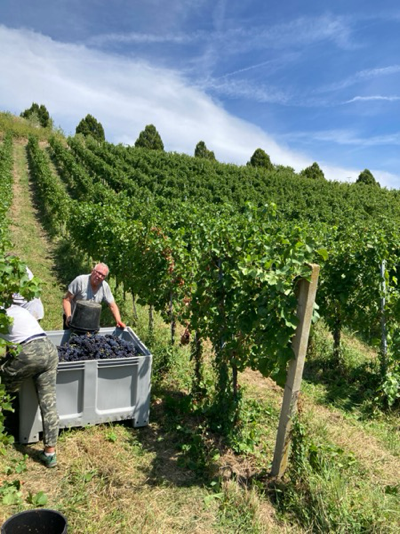
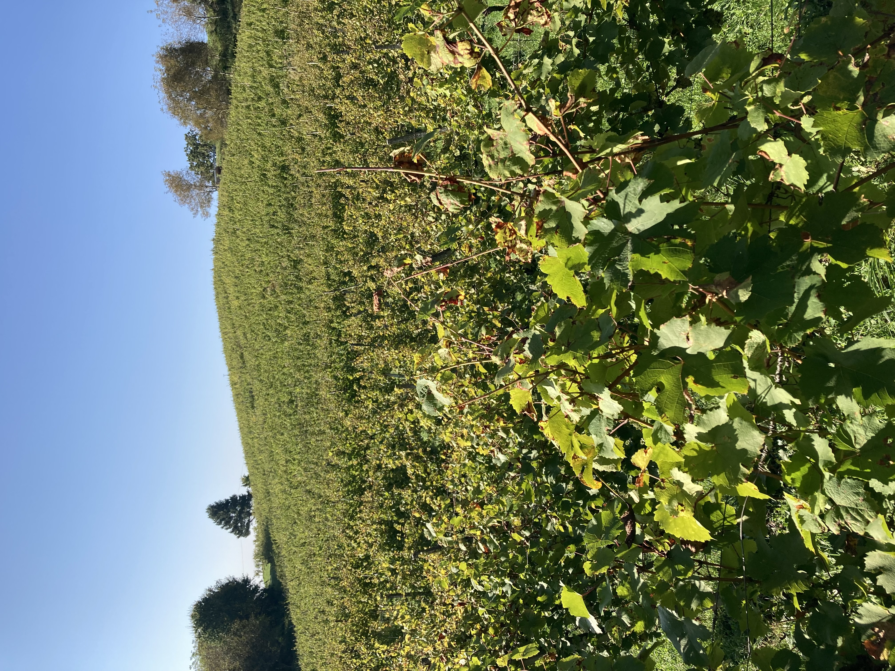
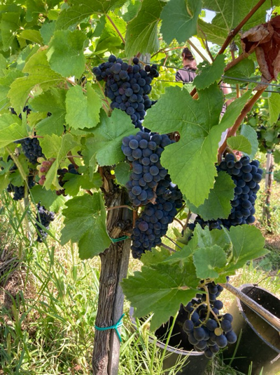
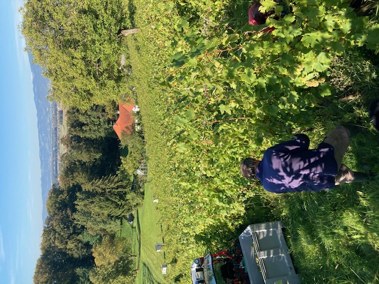

Naši Vinogradi

Malečnik
Vinograd v Malečniku leži na jugozahodni legi. Prst je sestavljena iz lapornate podlage, v zgornjih plasteh pa prevladuje težka ilovnata prst. V vinogradu uspevajo sorte laški rizling, šipon in sauvignon.

Gorca
Vinograd v Gorci leži na južni legi. Tla imajo lapornato podlago, na površju pa prevladuje lahka in rodovitna prst. V vinogradu uspevata sorti modri pinot in rumeni muškat.

Hrenca
Vinograd v Hrenci leži na jugovzhodni legi. Tla imajo lapornato podlago, na površju pa prevladuje ilovnata prst. V vinogradu uspevata sorti laški rizling in renski rizling.

Ruperče
Vinograd v Ruperčah leži na vzhodni legi. Zanj je značilna lahka peščena prst. V vinogradu uspeva sorta chardonnay.

Trčova
Vinograd v Trčovi leži na južni legi. Prst je peščeno lapornata, v globljih plasteh pa skalnata. V vinogradu uspeva sorta laški rizling.
Minister za zdravje opozarja: Prekomerno pitje alkohola škoduje zdravju!